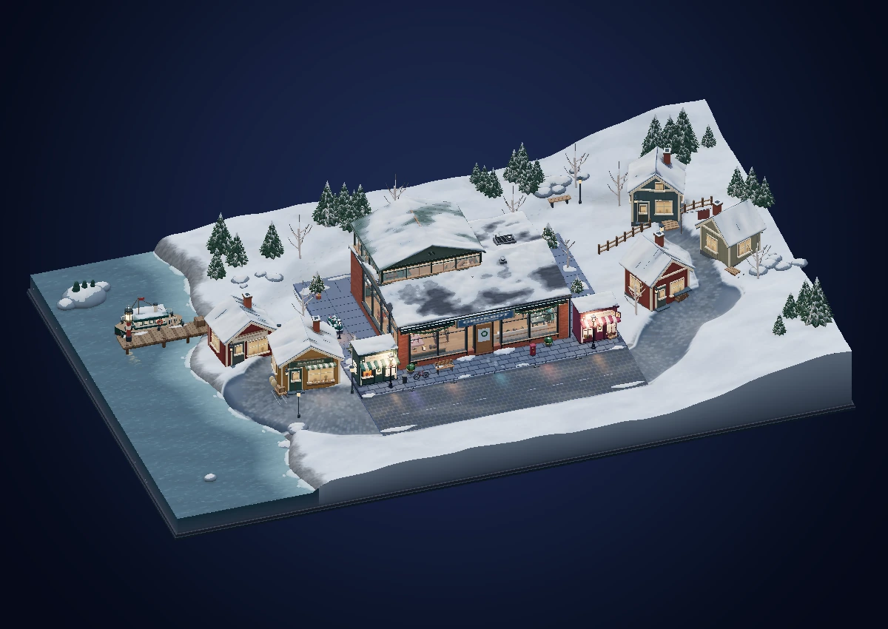
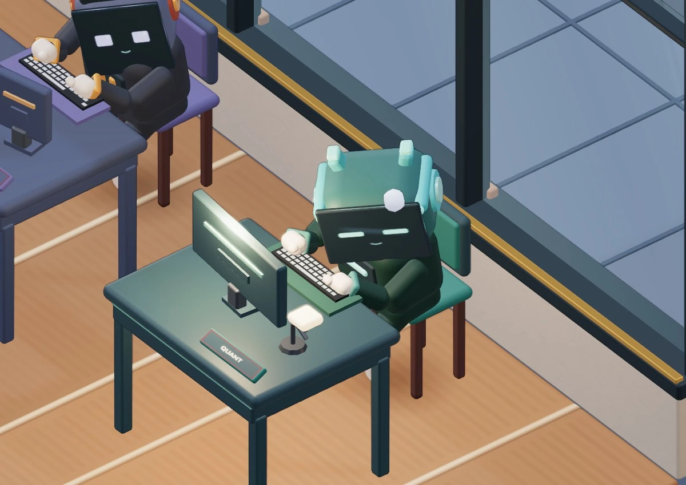
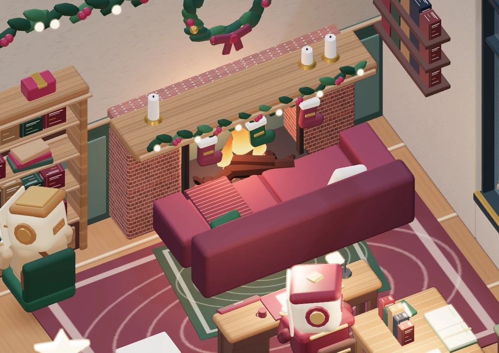
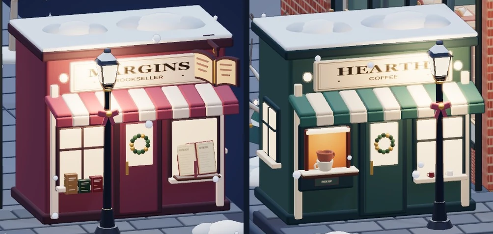

可互动的 3D 微缩场景
冬夜工作室
在咖啡吧楼上的阅览室看雪，或到一楼找七位机器人。走出工作室，沿着松湾冬港的小街，逛面包房、盖邮戳，再去码头看海。
在浏览器里直接体验，也可以下载后离线打开。

走近看一看
旋转场景、拉近镜头，看看几个藏在雪夜里的细节。



-
复制会话 ID
在 Grok Bot 侧栏打开对应会话的菜单，复制会话 ID。也可以使用完整的 Grok Bot 深度链接。
-
给角色保存绑定
打开绑定面板，把 ID 或链接粘贴在对应角色旁并保存，可以只绑定一位。
-
点击机器人打开会话
点击已绑定的机器人，或用数字键选中后按 Shift + Enter。如果浏览器弹出提示，允许它打开 Grok Bot。
绑定只保存在当前浏览器。所有人下载的 HTML 都从空白绑定开始。